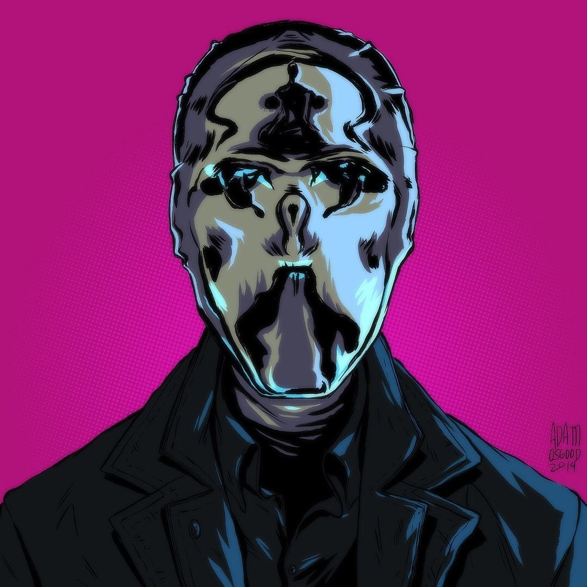
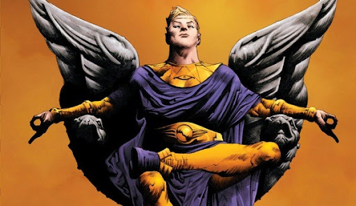
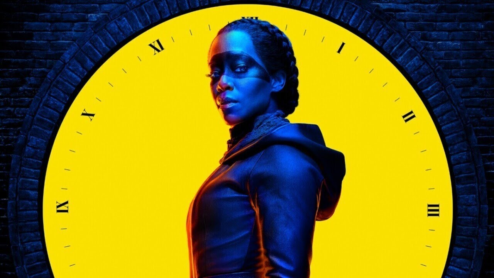
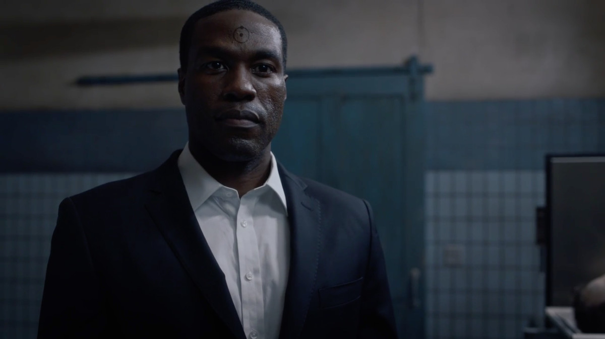

<!doctype html>
<html lang="es-mx">
  <head>
    <meta charset="utf-8">
    <meta name="viewport" content="width=device-width, initial-scale=1">
    <title>Watchmen</title>
  </head>
  <body>
    
  </body>
</html>
<!doctype html>
<html lang="es-mx">
  <head>
    <meta charset="utf-8">
    <meta name="viewport" content="width=device-width, initial-scale=1">    
    <meta name="description" content="Este documento explciara la serie de watchmen y la explicacion de los sucesos ocurridos despues del comic con nombre homonimo">
    <link href="https://cdn.jsdelivr.net/npm/bootstrap@5.3.3/dist/css/bootstrap.min.css" rel="stylesheet" integrity="sha384-QWTKZyjpPEjISv5WaRU9OFeRpok6YctnYmDr5pNlyT2bRjXh0JMhjY6hW+ALEwIH" crossorigin="anonymous">
    <link rel="icon" href="img/boton.jpg"/>
  <link rel="preconnect" href="https://fonts.googleapis.com">
<link rel="preconnect" href="https://fonts.gstatic.com" crossorigin>
<link href="https://fonts.googleapis.com/css2?family=Cormorant+Garamond:ital,wght@0,300;0,400;0,500;0,600;0,700;1,300;1,400;1,500;1,600;1,700&family=Work+Sans:ital,wght@0,100..900;1,100..900&family=Yarndings+20&display=swap" rel="stylesheet">
  <link rel="stylesheet" href="css/estilos.css">
  </head>
  <body class="bg-secondary" >
      <section class="container">
        <header class="text-center"> <h1 class="fs-1 text-warning"> Who watches the <b class="text-redFont"> watchmen</b> </h1> </header> 
      <hr>  
      <section class=" text-center ">
        <P > <b class=" text-redFont"> Estreno: </b > <b class = "text-white fs-6" > class 20 octubre 2019</b> </P>
        <P> <b class=" text-redFont"> Donde se filmo: </b> <b class = "text-white fs-6" > USA</b>  </P>
        <P> <b class=" text-redFont"> Genero: </b>  <b class = "text-white fs-6" > Drama, ciencia ficcion, heroes</b> </P>
        <P> <b class=" text-redFont"> creadores: </b> <b class = "text-white fs-6" > Alan Moore y Dave Gibbons </b>  </P>
      </section>
      <hr>
      <section>
       <h2 class = "text-white fs-1"  > TRAMA </h2>
       <p class = "text-white fs-6"  > La trama se desarrolla en la ficticia ciudad de Tulsa, a tres años de un ataque coordinado por The Seventh Kavalry ─grupo de supremacistas blancos, contra la policía y sus familias─ que se conoció como La Noche Blanca. Después del ataque, los oficiales de policía comenzaron a usar máscaras amarillas para proteger sus identidades. Mientras que, escondidos entre las sombras, los supremacistas utilizan máscaras en homenaje a <b class=" text-orange">"Rorschach"</b>  en blanco y negro.</p>
      </section>
      <hr>
      <section> 
       <h2 class = "text-white fs-1"> Episiodios</h2>
      <ul > <b class = " fs-5" > E1: </b>  <b class = "text-white fs-6" > It's Summer and We're Running Out of Ice </b></ul>
      <ul> <b class = "fs-5" > E2: </b>  <b class = "text-white fs-6" >  Martial Feats of Comanche Horsemanship </b></ul>
      <ul> <b class = "fs-5" > E3: </b>  <b class = "text-white fs-6" > She Was Killed by Space Junk </b></ul>
      <ul> <b class = "fs-5" > E4: </b>  <b class = "text-white fs-6" > Little Fear of Lightning</b></ul>
      <ul> <b class = "fs-5" > E5: </b>  <b class = "text-white fs-6" > This Extraordinary Being</b></ul>
      <ul> <b class = "fs-5" > E6: </b>  <b class = "text-white fs-6" > An Almost Religious Awe</b></ul>
      <ul> <b class = "fs-5" > E7: </b>  <b class = "text-white fs-6" > A God Walks into Abar</b></ul>
      <ul> <b class = "fs-5" > E8: </b>  <b class = "text-white fs-6" >  See How They Fly</b></ul>
     
     </section>
     
     <center>></center> 
      <hr>
     <section>
       <h1 class = "text-white fs-1">  Personajes</h1>
     
       <table class="bg-dark table-sm" > 
         <tr>
           <th>Personaje</th>
           <th>ilustracion</th>
           <th>descripcion</th>
         </tr>
         <tr>
           <td> Ozymandias / Jeremy irnos</td>
           <td><center> </td></center>
           <td>Nacido en la opulencia y con un coeficiente intelectual que le sitúa entre los genios más connotados de la historia, Veidt legó su vasta fortuna a la caridad y decidió embarcarse en un viaje por la ruta que siguió su ídolo Alejandro Magno, donde se entrenó para volcarse al heroísmo. 
           </td>
         </tr>
         <tr>
           <td> Angela Abar / Regina King </td>
           <td><center></td></center>
           <td>Angela es una oficial de policía fría y eficiente. Su habilidad para cazar miembros de la Séptima Caballería podría compararse con un perro de caza o rastreador. Debido a los eventos de la <b>Noche Blanca</b> , Angela odia a todos los racistas y a la Séptima Caballería en particular. 
           </td>
         </tr>
         <tr>
           <td> Looking glass / tim Blake Nelson </td>
           <td><center></td></center>
           <td>Dentro y fuera del disfraz, Wade tiene una personalidad seca y sardónica. Él habla en un tono lento y algo aburrido, ya sea en su propia casa, hablando con otros detectives o interrogando a sospechosos. Esto hace que muchos de sus verdaderos pensamientos sean un misterio para la mayoría de los demás, aunque puede ser el más transparente. 
           </td>
         </tr>
         <tr>
           <td> Chief Judd Crawford/ Don jhonson </td>
           <td><center> </td></center>
           <td>Después de graduarse, se convirtió en infante de marina y sirvió bajo el Capitán Robert S. Mueller en la Liberación de Vietnam, recibiendo múltiples reconocimientos por su valentía durante los barridos de purga de 1971 a 1973.
           </td>
         </tr>
         <tr>
           <td> Laurie blake / Jean Smart</td>
           <td><center></td></center>
           <td>Laurie Juspeczyk es de pensamiento liberal y se dice que es una mujer "moderna". Ella puede estar orgullosa de su herencia polaca, lo que podría explicar en parte su insistencia en ser llamada por su apellido real, pero inicialmente no estaba inclinada a luchar contra el crimen y parece sentir amargura por el bautizo de 'Miss Jupiter'. 
           </td>
         </tr>
         <tr>
           <td> Cal Abraham / Yahya adbul </td>
           <td><center> </td></center>
           <td>Nacido en la opulencia y con un coeficiente intelectual que le sitúa entre los genios más connotados de la historia, Veidt legó su vasta fortuna a la caridad y decidió embarcarse en un viaje por la ruta que siguió su ídolo Alejandro Magno, donde se entrenó para volcarse al heroísmo. 
           </td>
         </tr>
       </table>
     </section>
     
     <h1  class = "text-white fs-1" > Redes de la pagina </h1>
     
     <p class = "text-white fs-5"> Donde verlo: <a class = "fs-5 link-danger link-offset-2 link-underline-opacity-25 link-underline-opacity-100-hover" href="https://play.max.com/mini-series/f3a51e09-2662-40e0-a96b-4a571f149da4" target="_blank">HBO</a> </p>
     <p class = "text-white fs-5" > Detras de camaras: <a class =  "fs-5 link-danger link-offset-2 link-underline-opacity-25 link-underline-opacity-100-hover" href="https://play.max.com/mini-series/f3a51e09-2662-40e0-a96b-4a571f149da4" href="https://www.instagram.com/watchmen/" target="_blank">Instagram</a> </p>
     <p class = "text-white fs-5" > Promocionales: <a class =  "fs-5 link-danger link-offset-2 link-underline-opacity-25 link-underline-opacity-100-hover" href="https://play.max.com/mini-series/f3a51e09-2662-40e0-a96b-4a571f149da4" href="https://twitter.com/WatchmenSeries" target="_blank">X</a> </p>
     
     <hr>
     <div class="ratio ratio-16x9"> 
     <iframe width="840" height="475" src="https://www.youtube.com/embed/O1L8qyNkYLs?si=TMjyRHXsk3eYCd9a" title="YouTube video player" frameborder="0" allow="accelerometer; autoplay; clipboard-write; encrypted-media; gyroscope; picture-in-picture; web-share" referrerpolicy="strict-origin-when-cross-origin" allowfullscreen></iframe>
     </div>
      </section>
    
     
    <script src="https://cdn.jsdelivr.net/npm/bootstrap@5.3.3/dist/js/bootstrap.bundle.min.js" integrity="sha384-YvpcrYf0tY3lHB60NNkmXc5s9fDVZLESaAA55NDzOxhy9GkcIdslK1eN7N6jIeHz" crossorigin="anonymous"></script>
  </body>
</html>
